JEE Main 2024 (Session 2), 5 Apr Shift 2: worked solutions for review
Questions and options are NTA’s own images; the green option is NTA’s final key. Every solution below was written by Claude
and checked against NTA’s final key. It is not NTA’s solution. Please mark anything unclear or wrong.
Q1 · Mathematics · MCQ · ID 87827055698
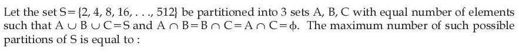
Hint 1: How many elements does S have? The three sets have equal sizes.
Hint 2: S = {21, …, 29} has 9 elements: choose 3 for A, 3 of the rest for B, the last 3 for C.
What this tests: Distributing objects into named groups
1. S has 9 elements, so |A| = |B| = |C| = 3.
2. Ways = C(9,3) × C(6,3) × C(3,3) = 84 × 20 × 1 = 1680.
Answer: (3)
If this felt hard: Here A, B, C are named, so we do not divide by 3!. Revise Permutations and Combinations.
Claude’s answer: 3 · NTA final key: 3 · agrees · Answer recomputed by script (tools/verify_pyq_solutions.py)
Note: Treats A, B, C as labelled sets (unlabelled would give 280, not an option).
Q2 · Mathematics · MCQ · ID 87827055699
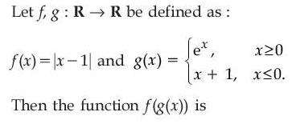
Hint 1: Write f(g(x)) piece by piece for x ≥ 0 and x ≤ 0.
Hint 2: f(g(x)) = ex − 1 for x ≥ 0 and −x for x ≤ 0.
What this tests: One-one and onto functions; composition
1. For x ≥ 0: f(g(x)) = |ex − 1| = ex − 1. For x ≤ 0: |x + 1 − 1| = −x.
2. Not one-one: e.g. x = 1 and x = −(e − 1) both give e − 1.
3. Not onto: the values are never negative.
Answer: (4)
If this felt hard: Revise Relations and Functions: checking injectivity and range.
Claude’s answer: 4 · NTA final key: 4 · agrees · Theory question: not computable, needs a teacher’s review
Q3 · Mathematics · MCQ · ID 87827055700
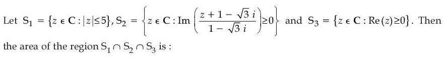
Hint 1: Simplify the condition in S2 by writing z = x + iy and multiplying by the conjugate of the denominator.
Hint 2: Im((z + 1 − √3 i)(1 + √3 i)) ≥ 0 gives √3 x + y ≥ 0.
What this tests: Regions in the complex plane
1. S2: y ≥ −√3 x, a half-plane bounded by a line through the origin at −60°.
2. S3: x ≥ 0.
3. Together with |z| ≤ 5 this is a sector from −60° to 90°: angle 150° = 5π/6.
4. Area = (1/2)(25)(5π/6) = 125π/12.
Answer: (4)
If this felt hard: Revise Complex Numbers: loci, and the sector area formula.
Claude’s answer: 4 · NTA final key: 4 · agrees · Answer recomputed with SymPy (tools/verify_pyq_solutions.py)
Q4 · Mathematics · MCQ · ID 87827055701
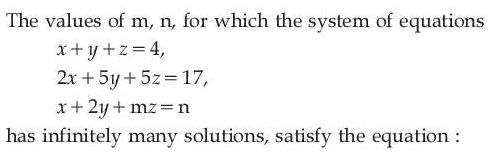
Hint 1: For infinitely many solutions the coefficient determinant must be 0.
Hint 2: det = 3m − 6 = 0, so m = 2; then the third equation must be a combination of the first two.
What this tests: Consistency of a system of linear equations
1. m = 2.
2. (1, 2, 2) = (1/3)(1, 1, 1) + (1/3)(2, 5, 5), so n = (4 + 17)/3 = 7.
3. m2 + n2 − mn = 4 + 49 − 14 = 39.
Answer: (2)
If this felt hard: Revise Determinants (Cramer's rule cases).
Claude’s answer: 2 · NTA final key: 2 · agrees · Answer recomputed with SymPy (tools/verify_pyq_solutions.py)
Q5 · Mathematics · MCQ · ID 87827055702
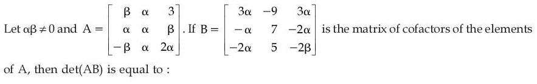
Hint 1: B is the cofactor matrix, so |B| = |adj A| = |A|2. You only need |A|. Use two cofactor entries to find α and β.
Hint 2: C11 = 2α2 − αβ = 3α and C12 = −(2α2 + β2) = −9.
What this tests: Cofactors and adjoint
1. From C11: 2α − β = 3. From C12: 2α2 + β2 = 9. So α = 2, β = 1.
2. |A| = β(3α) + α(−9) + 3(3α) = 6 − 18 + 18 = 6.
3. det(AB) = |A| × |A|2 = 216.
Answer: (3)
If this felt hard: Revise |adj A| = |A|2 for 3 × 3 matrices.
Claude’s answer: 3 · NTA final key: 3 · agrees · Answer recomputed with SymPy (tools/verify_pyq_solutions.py)
Q6 · Mathematics · MCQ · ID 87827055703
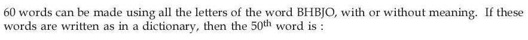
Hint 1: Arrange the letters alphabetically: B, B, H, J, O. Count words by first letter.
Hint 2: Starting with B: 4! = 24. With H, J or O: 4!/2! = 12 each.
What this tests: Dictionary rank of words
1. B…: 24 words (1–24). H…: 12 (25–36). J…: 12 (37–48).
2. O… in order: OBBHJ (49), OBBJH (50).
Answer: (2)
If this felt hard: Revise Permutations with repeated letters.
Claude’s answer: 2 · NTA final key: 2 · agrees · Answer recomputed by script (tools/verify_pyq_solutions.py)
Q7 · Mathematics · MCQ · ID 87827055704
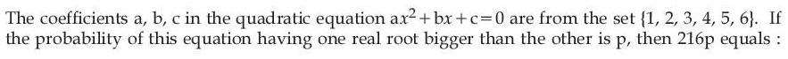
Hint 1: 'One real root bigger than the other' means two distinct real roots: b2 > 4ac.
Hint 2: Count triples with b2 > 4ac for b = 3, 4, 5, 6 (b = 1, 2 give none).
What this tests: Probability with discriminant
1. b = 3: ac ≤ 2 → 3. b = 4: ac ≤ 3 → 5. b = 5: ac ≤ 6 → 14. b = 6: ac ≤ 8 → 16.
2. Total 38 out of 216.
3. 216p = 38.
Answer: (2)
If this felt hard: Revise counting cases in Probability.
Claude’s answer: 2 · NTA final key: 2 · agrees · Answer recomputed by script (tools/verify_pyq_solutions.py)
Q8 · Mathematics · MCQ · ID 87827055705
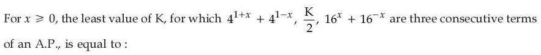
(1) 
(3) 
(4) 
Hint 1: The middle term of an AP is the average of its neighbours, so K equals their sum.
Hint 2: Let t = 4x, s = t + 1/t ≥ 2: K = 4s + s2 − 2.
What this tests: AP condition and AM–GM
1. K = 4(4x + 4−x) + (16x + 16−x) = 4s + (s2 − 2).
2. This increases with s, and s ≥ 2 (at x = 0).
3. Least K = 8 + 2 = 10.
Answer: (1)
If this felt hard: Revise Sequences and Series and t + 1/t ≥ 2.
Claude’s answer: 1 · NTA final key: 1 · agrees · Answer recomputed with SymPy (tools/verify_pyq_solutions.py)
Q9 · Mathematics · MCQ · ID 87827055706
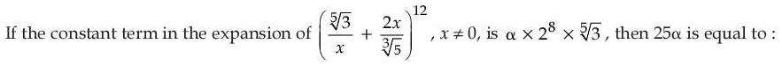
Hint 1: Find r for which the power of x is 0.
Hint 2: Tr+1 = C(12,r)(31/5/x)12−r(2x/51/3)r; power of x = 2r − 12.
What this tests: Binomial theorem: constant term
1. r = 6.
2. Term = C(12,6) × 36/5 × 26/52 = 924 × 3 × 31/5 × 64/25.
3. = α × 28 × 31/5 gives α = 924 × 3/100 = 27.72.
4. 25α = 693.
Answer: (4)
If this felt hard: Revise the general term.
Claude’s answer: 4 · NTA final key: 4 · agrees · Answer recomputed with SymPy (tools/verify_pyq_solutions.py)
Q10 · Mathematics · MCQ · ID 87827055707
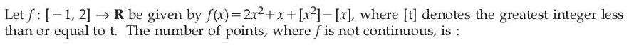
(1) 
(2) 
(3) 
(4) 
Hint 1: List where [x2] and [x] jump on [−1, 2], and check whether the jumps cancel.
Hint 2: [x2] jumps at x = −1, 1, √2, √3, 2; [x] jumps at 0, 1, 2. At x = 1 and x = 2 the two jumps cancel.
What this tests: Continuity of greatest-integer functions
1. At x = −1 (right side only): [x2] drops from 1 to 0, [x] stays −1: discontinuous.
2. At 0: [x] jumps, [x2] does not: discontinuous.
3. At 1: both jump by 1 and cancel: continuous. At 2 (left side only): 3 − 1 = 2 = 4 − 2: continuous.
4. At √2 and √3: discontinuous.
5. Total 4.
Answer: (3)
If this felt hard: Always check whether two jumps cancel. Revise Continuity.
Claude’s answer: 3 · NTA final key: 3 · agrees · Answer recomputed with SymPy (tools/verify_pyq_solutions.py)
Q11 · Mathematics · MCQ · ID 87827055708
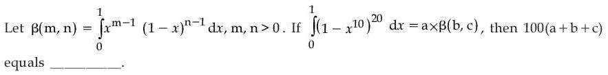
Hint 1: Substitute t = x10 to turn it into a Beta integral.
Hint 2: dx = (1/10)t−9/10 dt, so the integral is (1/10)∫ t1/10 − 1(1 − t)20 dt.
What this tests: Definite integrals by substitution (Beta function form)
1. Integral = (1/10) β(1/10, 21).
2. a = 1/10, b = 1/10, c = 21.
3. 100(a + b + c) = 100 × 21.2 = 2120.
Answer: (1)
If this felt hard: Match the integrand to the given definition carefully.
Claude’s answer: 1 · NTA final key: 1 · agrees · Answer recomputed with SymPy (tools/verify_pyq_solutions.py)
Q12 · Mathematics · MCQ · ID 87827055709
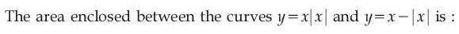
(1) 
(3)
(4)
Hint 1: Write both curves separately for x ≥ 0 and x < 0.
Hint 2: x ≥ 0: y = x2 and y = 0 meet only at 0. x < 0: y = −x2 and y = 2x meet at x = −2.
What this tests: Area with modulus functions
1. The region is between x = −2 and 0, with y = −x2 on top.
2. Area = ∫−20(−x2 − 2x) dx = 4/3.
Answer: (3)
If this felt hard: Revise Application of Integrals.
Claude’s answer: 3 · NTA final key: 3 · agrees · Answer recomputed with SymPy (tools/verify_pyq_solutions.py)
Q13 · Mathematics · MCQ · ID 87827055710
(1)
(2)
(3)
(4)
Hint 1: Write the family: centre (−g, −g) on y = x and passing through the origin.
Hint 2: x2 + y2 + 2g(x + y) = 0. Differentiate to eliminate g: g = −(x + yy')/(1 + y').
What this tests: Forming differential equations of families of curves
1. Family: x2 + y2 + 2g(x + y) = 0.
2. Differentiating: x + yy' + g(1 + y') = 0.
3. Eliminating g: (x2 + y2)(1 + y') = 2(x + yy')(x + y).
4. Rearranging: (x2 − y2 + 2xy) dx = (x2 − y2 − 2xy) dy.
Answer: (1)
If this felt hard: Revise Differential Equations: eliminating arbitrary constants.
Claude’s answer: 1 · NTA final key: 1 · agrees · Answer recomputed with SymPy (tools/verify_pyq_solutions.py)
Q14 · Mathematics · MCQ · ID 87827055711
(1)
(2)
(3)
(4)
Hint 1: Put A at the origin. Where is the centre of a circle touching BC and CD?
Hint 2: Centre (4 − r, 4 − r) on the diagonal; F = (2, 2). Distance from centre to F = r.
What this tests: Circle touching two lines
1. A(0,0), C(4,4), F(2,2).
2. √2(2 − r) = r gives r = 4 − 2√2.
3. Check: r2 − 8r + 8 = (24 − 16√2) − (32 − 16√2) + 8 = 0.
Answer: (2)
If this felt hard: Revise Circles and coordinate set-up of squares.
Claude’s answer: 2 · NTA final key: 2 · agrees · Answer recomputed with SymPy (tools/verify_pyq_solutions.py)
Q15 · Mathematics · MCQ · ID 87827055712
(1) 
(2) 
(3) 
(4)
Hint 1: The common chord is S1 − S2 = 0.
Hint 2: C2: x2 + y2 + 2x − 3 = 0. Subtract.
What this tests: Common chord of two circles
1. Common chord: −4x − 2y + 4 = 0, i.e. 2x + y = 2.
2. P = (0, 2).
3. Centre of C1 = (1, 1): distance2 = 1 + 1 = 2.
Answer: (2)
If this felt hard: Revise Circles.
Claude’s answer: 2 · NTA final key: 2 · agrees · Answer recomputed with SymPy (tools/verify_pyq_solutions.py)
Q16 · Mathematics · MCQ · ID 87827055713
(1) 
(2) 
(3)
(4)
Hint 1: Area of PAB using coordinates gives a linear expression in x and y.
Hint 2: Area = (1/2)|3y − 2x − 5| = 10; 'above AB' picks the + sign.
What this tests: Area of a triangle and locus
1. (1/2)|(3)(y − 1) − (2)(x + 1)| = 10, so 3y − 2x − 5 = 20.
2. −2x + 3y = 25; scale to right side 15: a = −6/5, b = 9/5.
3. 5a + 2b = −6 + 18/5 = −12/5.
Answer: (4)
If this felt hard: Revise Straight Lines.
Claude’s answer: 4 · NTA final key: 4 · agrees · Answer recomputed with SymPy (tools/verify_pyq_solutions.py)
Q17 · Mathematics · MCQ · ID 87827055714
(1) 
(2)
(3) 
(4) 
Hint 1: Find the foot of the perpendicular from (8, 5, 7) to the line.
Hint 2: Foot = (1 + 2t, −1 + 3t, 2 + 5t) with t = 3/2.
What this tests: Image of a point in a line
1. (P − A)·d = (7, 6, 5)·(2, 3, 5) = 57, d·d = 38: t = 3/2.
2. Foot F = (4, 7/2, 19/2). Image = 2F − P = (0, 2, 12).
3. Sum = 14.
Answer: (4)
If this felt hard: Revise Three Dimensional Geometry.
Claude’s answer: 4 · NTA final key: 4 · agrees · Answer recomputed with SymPy (tools/verify_pyq_solutions.py)
Q18 · Mathematics · MCQ · ID 87827055715
(1)
(2) 
(3)
(4) 
Hint 1: Bring everything to one side using a × (c + i) = −(c + i) × a.
Hint 2: (c + i) × (2a + b + i) = 0, so c + i = λ(7, 8, 0).
What this tests: Vector product equations
1. c = (7λ − 1, 8λ, 0).
2. a·c = 2(7λ − 1) + 40λ = 54λ − 2 = −29, so λ = −1/2.
3. c = (−9/2, −4, 0); c·(−2, 1, 1) = 9 − 4 = 5.
Answer: (4)
If this felt hard: Revise Vector Algebra.
Claude’s answer: 4 · NTA final key: 4 · agrees · Answer recomputed with SymPy (tools/verify_pyq_solutions.py)
Q19 · Mathematics · MCQ · ID 87827055716
(1)
(2)
(3)
(4)
Hint 1: a = b × c is perpendicular to c. What does that do to |c − a|2?
Hint 2: |c − a|2 = |c|2 + |a|2, and |a| = |b||c| sin α.
What this tests: Cross product magnitude
1. |c| = 2/(3 sin α), smallest at α = π/3: |c|2 = 16/27.
2. 27|c − a|2 = 27(16/27 + 4) = 16 + 108 = 124.
Answer: (2)
If this felt hard: Revise Vector Algebra.
Claude’s answer: 2 · NTA final key: 2 · agrees · Answer recomputed with SymPy (tools/verify_pyq_solutions.py)
Q20 · Mathematics · MCQ · ID 87827055717
(1)
(2) 
(3)
(4) 
Hint 1: Write everything in c = cos θ and factorise the denominator.
Hint 2: Denominator = 2(c + 1)(2c2 + 2c − 1); numerator = 2c2 + 2c − 1. So y = 1/(2(1 + cos θ)) = sec2(θ/2)/4.
What this tests: Simplifying before differentiating
1. y = (1/4) sec2(θ/2).
2. y' = (1/4) sec2(θ/2) tan(θ/2); y'' = (1/4)[sec2(θ/2) tan2(θ/2) + (1/2) sec4(θ/2)].
3. At θ = π/2: y = 1/2, y' = 1/2, y'' = 1.
4. Sum = 2.
Answer: (4)
If this felt hard: Revise multiple-angle formulas and differentiation.
Claude’s answer: 4 · NTA final key: 4 · agrees · Answer recomputed with SymPy (tools/verify_pyq_solutions.py)
Q21 · Mathematics · Numerical · ID 87827055718
Hint 1: Treat it as a quadratic in sin x. Note 2 + 2x − x2 = 3 − (x − 1)2.
Hint 2: It factorises as (sin x + 3)(sin x − (x − 1)2) = 0.
What this tests: Graphical solution of equations
1. sin x = −3 is impossible, so sin x = (x − 1)2.
2. Need sin x ≥ 0: x in [0, π].
3. The parabola starts above sin x at 0, dips below it at x = 1, and is above again by x = 2: two crossings.
Answer: 2
If this felt hard: Revise sketching sin x with a parabola.
Claude’s answer: 2 · NTA final key: 2 · agrees · Answer recomputed with SymPy (tools/verify_pyq_solutions.py)
Q22 · Mathematics · Numerical · ID 87827055719
Hint 1: Look for a pattern: each term is rn/(n(n + 1)) with r = (√3 − √2)/√3.
Hint 2: Use 1/(n(n + 1)) = 1/n − 1/(n + 1) and Σ rn/n = −ln(1 − r).
What this tests: Series using log expansion
1. Sum after 1 = Σ rn/(n(n + 1)) = 1 + ((1 − r)/r) ln(1 − r).
2. 1 − r = √(2/3), (1 − r)/r = √2/(√3 − √2) = √6 + 2.
3. Total = 2 + (√6 + 2)(1/2) ln(2/3) = 2 + (√(3/2) + 1) ln(2/3).
4. a = 2, b = 3: 11a + 18b = 76.
Answer: 76
If this felt hard: Revise the series for ln(1 − x).
Claude’s answer: 76 · NTA final key: 76 · agrees · Answer recomputed with SymPy (tools/verify_pyq_solutions.py)
Q23 · Mathematics · Numerical · ID 87827055720
Hint 1: 1/a is a root of 2 + x − 2x2 = 0. Factorise and use 1 − cos u ≈ u2/2.
Hint 2: 2 + x − 2x2 = −2(x − 1/a)(x − β'), with roots (1 ± √17)/4.
What this tests: Limits with quadratic roots
1. Limit = 16 × (1/2) × 4(1/a − β')2/a2 with 1/a − β' = √17/2.
2. = 136/a2, and a2 = (9 − √17)/8.
3. = 17(9 + √17) = 153 + 17√17, so α + β = 170.
Answer: 170
If this felt hard: Revise standard limits.
Claude’s answer: 170 · NTA final key: 170 · agrees · Answer recomputed with SymPy (tools/verify_pyq_solutions.py)
Q24 · Mathematics · Numerical · ID 87827055721
Hint 1: √(8x − x2 − 12) is the upper half of a circle. What does the whole expression measure?
Hint 2: The expression is the squared distance from a point on the upper semicircle (centre (4, 0), radius 2) to (7, 4).
What this tests: Geometric interpretation of an expression
1. Distance from (7, 4) to (4, 0) is 5; the nearest point is on the upper half, so m = (5 − 2)2 = 9.
2. The far point of the full circle is on the lower half, so check the ends (2, 0) and (6, 0): 41 and 17. M = 41.
3. M2 − m2 = 1681 − 81 = 1600.
Answer: 1600
If this felt hard: Revise Circles and distance.
Claude’s answer: 1600 · NTA final key: 1600 · agrees · Answer recomputed with SymPy (tools/verify_pyq_solutions.py)
Q25 · Mathematics · Numerical · ID 87827055722
Hint 1: Remove the x in the numerator with the King's rule.
Hint 2: f(t) = π∫0π dx/(1 − k sin2x) = 2π × π/(2√(1 − k)), k = cos2t.
What this tests: Definite integrals: King's rule and standard forms
1. f(t) = π2/sin t (since √(1 − cos2t) = sin t on (0, π)).
2. ∫0π/2 π2/f(t) dt = ∫0π/2 sin t dt = 1.
Answer: 1
If this felt hard: Revise properties of definite integrals.
Claude’s answer: 1 · NTA final key: 1 · agrees · Answer recomputed with SymPy (tools/verify_pyq_solutions.py)
Q26 · Mathematics · Numerical · ID 87827055723
Hint 1: Find the integrating factor. Notice what y e−1/(1 + x^{2)} turns out to be.
Hint 2: IF = e−1/(1 + x^{2)}; then f(x) = y × IF = ∫ x dx.
What this tests: Linear DE and area
1. f(x) = x2/2 (constant 0 from y(0) = 0).
2. x2/2 = x + 4 gives x = −2, 4.
3. Area = ∫−24 (x + 4 − x2/2) dx = 18.
Answer: 18
If this felt hard: Revise the integrating factor and areas.
Claude’s answer: 18 · NTA final key: 18 · agrees · Answer recomputed with SymPy (tools/verify_pyq_solutions.py)
Q27 · Mathematics · Numerical · ID 87827055724
Hint 1: The tangent has slope −1/2. Use the point of contact for a parabola with given slope.
Hint 2: For (y)2 = 4a(X), a = 1, X = x − 9: point of contact (a/m2, 2a/m).
What this tests: Tangent to a parabola
1. m = −1/2: X = 4, y = −4, so P = (13, −4).
2. Circle centre (7, 4).
3. Distance = √(36 + 64) = 10.
Answer: 10
If this felt hard: Revise Conic Sections.
Claude’s answer: 10 · NTA final key: 10 · agrees · Answer recomputed with SymPy (tools/verify_pyq_solutions.py)
Q28 · Mathematics · Numerical · ID 87827055725
Hint 1: Find the feet of the common perpendicular on both lines.
Hint 2: PQ must be perpendicular to both directions (−3, 4, 2) and (−1, 2, 0).
What this tests: Shortest distance line between skew lines
1. Solving gives s = −1, t = 1: feet (1, −2, 3) and (−3, −4, 1).
2. The SD line: (1, −2, 3) + k(2, 1, 1); x = −1 at k = −1: (−1, −3, 2).
3. (α − β)2 = (−5)2 = 25.
Answer: 25
If this felt hard: Revise Three Dimensional Geometry.
Claude’s answer: 25 · NTA final key: 25 · agrees · Answer recomputed with SymPy (tools/verify_pyq_solutions.py)
Q29 · Mathematics · Numerical · ID 87827055726
Hint 1: First find K. Then write μ and σ in terms of α.
Hint 2: K = 1/4, μ = α/3 − 1/2, σ2 = E[X2] − μ2, and σ = μ + 2.
What this tests: Mean and variance
1. K = 1/4; μ = α/3 − 1/2; E[X2] = α2/3 + 5/2.
2. σ = μ + 2 squared and equated: α2/9 = 2α/3, so α = 6 (α = 0 would repeat the value 0).
3. μ = 3/2, σ = 7/2: σ + μ = 5.
Answer: 5
If this felt hard: Revise Probability distributions.
Claude’s answer: 5 · NTA final key: 5 · agrees · Answer recomputed with SymPy (tools/verify_pyq_solutions.py)
Note: α = 0 is rejected because X = 0 is already listed (it would give 1).
Q30 · Mathematics · Numerical · ID 87827055727
Hint 1: Split at x = −5 and x = −7.
Hint 2: x ≥ −5: x2 + 7x + 12 = 0. −7 ≤ x < −5: x2 + 3x − 12 = 0. x < −7: x2 + 7x + 16 = 0.
What this tests: Equations with modulus
1. x ≥ −5: x = −3, −4 (both valid).
2. −7 ≤ x < −5: x = (−3 − √57)/2 ≈ −5.27 valid.
3. x < −7: no real roots.
4. Total 3.
Answer: 3
If this felt hard: Check each root lies in its own interval.
Claude’s answer: 3 · NTA final key: 3 · agrees · Answer recomputed with SymPy (tools/verify_pyq_solutions.py)
Q31 · Physics · MCQ · ID 87827055728
(1)
(2)
(3)
(4)
Hint 1: a/V2 has the dimensions of pressure, and b has the dimensions of volume.
Hint 2: [a] = [P][V2] = ML5T−2, [b] = L3.
What this tests: Dimensions in the van der Waals equation
1. [a] = ML−1T−2 × L6 = ML5T−2.
2. [b] = L3.
3. [ab−1] = ML2T−2.
Answer: (1)
If this felt hard: Revise Units and Measurements.
Claude’s answer: 1 · NTA final key: 1 · agrees · Theory question: not computable, needs a teacher’s review
Q32 · Physics · MCQ · ID 87827055729
(1)
(2)
(3)
(4)
Hint 1: Find ω from 120 revolutions in 3 minutes.
Hint 2: ω = 2π × 120/180 rad/s; a = ω2r.
What this tests: Centripetal acceleration
1. ω = 4π/3 rad/s.
2. a = (16π2/9) × 9 = 16π2 m s−2.
Answer: (3)
If this felt hard: Revise Motion in a Plane.
Claude’s answer: 3 · NTA final key: 3 · agrees · Answer recomputed by script (tools/verify_pyq_solutions.py)
Note: The monkey moves with the man, so it has the same acceleration.
Q33 · Physics · MCQ · ID 87827055730
(1)
(2)
(3)
(4)
Hint 1: On a horizontal surface, N = mg.
Hint 2: fk = μkmg.
What this tests: Kinetic friction
1. f = 0.3 × 50 × 9.8 = 147 N.
Answer: (3)
If this felt hard: Revise Laws of Motion.
Claude’s answer: 3 · NTA final key: 3 · agrees · Answer recomputed by script (tools/verify_pyq_solutions.py)
Note: Uses g = 9.8 m s^{−2}.
Q34 · Physics · MCQ · ID 87827055731
(1)
(2)
(3)
(4)
Hint 1: Does |p| change with time? If not, how is dp/dt oriented relative to p?
Hint 2: |p| = 1 always, so F = dp/dt ⊥ p.
What this tests: Force as rate of change of momentum
1. p = (cos kt, −sin kt), |p| = 1.
2. F = dp/dt = k(−sin kt, −cos kt); F·p = 0.
3. Angle = π/2.
Answer: (1)
If this felt hard: Revise Laws of Motion.
Claude’s answer: 1 · NTA final key: 1 · agrees · Theory question: not computable, needs a teacher’s review
Q35 · Physics · MCQ · ID 87827055732
(1)
(2)
(3)
(4)
Hint 1: Constant power: P = Fv = mv dv/dt. How does v grow with t?
Hint 2: v2 ∝ t, so v ∝ t1/2.
What this tests: Constant power motion
1. mv dv = P dt gives v ∝ t1/2.
2. x = ∫ v dt ∝ t3/2.
Answer: (2)
If this felt hard: Revise Work, Energy and Power.
Claude’s answer: 2 · NTA final key: 2 · agrees · Answer recomputed by script (tools/verify_pyq_solutions.py)
Q36 · Physics · MCQ · ID 87827055733
(1)
(2)
(3)
(4)
Hint 1: LC = 1 MSD − 1 VSD.
Hint 2: 20 VSD = 19 MSD, so 1 VSD = 19/20 MSD.
What this tests: Vernier callipers
1. LC = MSD/20 = 0.1 mm.
2. MSD = 2 mm.
Answer: (2)
If this felt hard: Revise least count in Units and Measurements.
Claude’s answer: 2 · NTA final key: 2 · agrees · Answer recomputed by script (tools/verify_pyq_solutions.py)
Q37 · Physics · MCQ · ID 87827055734
(1)
(2)
(3)
(4)
Hint 1: Kepler's law: T2 = 4π2r3/(GM).
Hint 2: r3 ∝ MT2: compare with earth (24 h, 4.2 × 104 km).
What this tests: Kepler's third law
1. r3/rE3 = (1/4)(6/24)2 = 1/64.
2. r = 4.2 × 104/4 = 1.05 × 104 km.
Answer: (3)
If this felt hard: Revise Gravitation.
Claude’s answer: 3 · NTA final key: 3 · agrees · Answer recomputed by script (tools/verify_pyq_solutions.py)
Q38 · Physics · MCQ · ID 87827055735
(1)
(2)
(3)
(4)
Hint 1: Which modulus uses tangential stress, which uses uniform normal pressure?
Hint 2: Restoring force per unit area = stress. Tangential: shear. Uniform pressure all round: bulk. Normal on opposite faces: Young's.
What this tests: Elastic moduli
1. A → III (stress). B → IV (shear modulus). C → I (bulk modulus). D → II (Young's modulus).
Answer: (4)
If this felt hard: Revise Mechanical Properties of Solids.
Claude’s answer: 4 · NTA final key: 4 · agrees · Theory question: not computable, needs a teacher’s review
Q39 · Physics · MCQ · ID 87827055736
(1)
(2)
(3)
(4)
Hint 1: Recall the mean free path formula from kinetic theory.
Hint 2: λ = 1/(√2 nπd2).
What this tests: Mean free path
1. Mean free path = 1/(√2 π d2 n).
Answer: (1)
If this felt hard: Revise Kinetic Theory.
Claude’s answer: 1 · NTA final key: 1 · agrees · Theory question: not computable, needs a teacher’s review
Q40 · Physics · MCQ · ID 87827055737
(1)
(2)
(3)
(4)
Hint 1: What builds up on a moving tanker because of friction with air?
Hint 2: Static charge; the chain earths it.
What this tests: Electrostatics in daily life
1. The chain conducts charge from air friction to the ground and prevents sparks.
Answer: (3)
If this felt hard: Revise Electric Charges and Fields.
Claude’s answer: 3 · NTA final key: 3 · agrees · Theory question: not computable, needs a teacher’s review
Q41 · Physics · MCQ · ID 87827055738
(1)
(2)
(3)
(4)
Hint 1: In series the same current flows through L. Find XL.
Hint 2: XL = 2πfL.
What this tests: Inductive reactance
1. XL = 2π × 50 × 0.01 = 3.14 Ω.
2. I = 31.4/3.14 = 10 A.
Answer: (1)
If this felt hard: Revise Alternating Current.
Claude’s answer: 1 · NTA final key: 1 · agrees · Answer recomputed by script (tools/verify_pyq_solutions.py)
Q42 · Physics · MCQ · ID 87827055739
(1)
(2)
(3)
(4)
Hint 1: The 5 Ω and 10 Ω are in parallel. What is common to them?
Hint 2: Same voltage: P = V2/R.
What this tests: Power in parallel resistors
1. P5/P10 = 10/5 = 2.
Answer: (2)
If this felt hard: Revise Current Electricity.
Claude’s answer: 2 · NTA final key: 2 · agrees · Answer recomputed by script (tools/verify_pyq_solutions.py)
Q43 · Physics · MCQ · ID 87827055740
(1)
(2)
(3)
(4)
Hint 1: Recall the Lorentz force and the order in the cross product.
Hint 2: F = qE + q(v × B).
What this tests: Lorentz force
1. F1 = qE, F2 = q(v × B).
2. q(B × v) has the wrong sign.
Answer: (2)
If this felt hard: Revise Moving Charges and Magnetism.
Claude’s answer: 2 · NTA final key: 2 · agrees · Theory question: not computable, needs a teacher’s review
Q44 · Physics · MCQ · ID 87827055741
(1)
(2)
(3)
(4)
Hint 1: Order the EM spectrum by wavelength.
Hint 2: Gamma < 10−3 nm < X-rays < 1 nm < UV < 400 nm < visible < 700 nm < IR < 1 mm.
What this tests: Electromagnetic spectrum
1. IR: 1 mm to 700 nm (III). UV: 400 nm to 1 nm (II). X-rays: 1 nm to 10−3 nm (IV). Gamma: below 10−3 nm (I).
Answer: (2)
If this felt hard: Revise Electromagnetic Waves.
Claude’s answer: 2 · NTA final key: 2 · agrees · Theory question: not computable, needs a teacher’s review
Q45 · Physics · MCQ · ID 87827055742
(1)
(2)
(3)
(4)
Hint 1: Why does a prism split white light at all?
Hint 2: Refractive index depends on wavelength; red has the smallest n.
What this tests: Dispersion
1. Red deviates least. Statement I true.
2. n varies with wavelength in a dispersive medium. Statement II true.
Answer: (1)
If this felt hard: Revise Ray Optics: prism.
Claude’s answer: 1 · NTA final key: 1 · agrees · Theory question: not computable, needs a teacher’s review
Q46 · Physics · MCQ · ID 87827055743
(1)
(2)
(3)
(4)
Hint 1: Find the full-scale current of the galvanometer from the voltmeter data.
Hint 2: Ig = 10/(100 + 400). Shunt S = IgG/(I − Ig).
What this tests: Converting a galvanometer
1. Ig = 0.02 A.
2. S = 0.02 × 100/(10 − 0.02) ≈ 0.2 Ω = 20 × 10−2 Ω.
Answer: (1)
If this felt hard: Revise Moving Charges and Magnetism.
Claude’s answer: 1 · NTA final key: 1 · agrees · Answer recomputed by script (tools/verify_pyq_solutions.py)
Q47 · Physics · MCQ · ID 87827055744
(1)
(2)
(3)
(4)
Hint 1: eV0 = hν − φ. Which quantities appear?
Hint 2: V0 depends on ν and φ, not on intensity.
What this tests: Stopping potential
1. Options 1, 2, 4 are true.
2. V0 does not change with intensity, so option 3 is not true.
Answer: (3)
If this felt hard: Revise Dual Nature of Radiation and Matter.
Claude’s answer: 3 · NTA final key: 3 · agrees · Theory question: not computable, needs a teacher’s review
Q48 · Physics · MCQ · ID 87827055745
(1)
(2)
(3)
(4)
Hint 1: Write L = mvr and find how v depends on r.
Hint 2: mv2/r = ke2/r2 gives v ∝ r−1/2.
What this tests: Bohr model
1. v ∝ 1/√r.
2. L = mvr ∝ √r.
Answer: (1)
If this felt hard: Revise Atoms (r ∝ n2, L ∝ n).
Claude’s answer: 1 · NTA final key: 1 · agrees · Theory question: not computable, needs a teacher’s review
Q49 · Physics · MCQ · ID 87827055746
(1)
(2)
(3)
(4)
Hint 1: Combine PVγ = constant with PV = nRT to relate P and T.
Hint 2: P ∝ Tγ/(γ−1).
What this tests: Adiabatic relations
1. γ/(γ − 1) = 3.
2. γ = 3/2.
Answer: (1)
If this felt hard: Revise Thermodynamics.
Claude’s answer: 1 · NTA final key: 1 · agrees · Answer recomputed with SymPy (tools/verify_pyq_solutions.py)
Q50 · Physics · MCQ · ID 87827055747
(1)
(2)
(3)
(4)
Hint 1: Write the Boolean expression: OR of (A + B) and (B·1).
Hint 2: Y = A + B + B = A + B.
What this tests: Logic gates
1. Y = A + B.
2. Y = 0 only when A = 0 and B = 0.
Answer: (1)
If this felt hard: Revise Semiconductor Electronics.
Claude’s answer: 1 · NTA final key: 1 · agrees · Theory question: not computable, needs a teacher’s review
Q51 · Physics · Numerical · ID 87827055748
Hint 1: H ∝ u2.
Hint 2: H = u2sin2θ/(2g).
What this tests: Projectile height
1. Halving u divides H by 4.
2. 64/4 = 16 m.
Answer: 16
If this felt hard: Revise Motion in a Plane.
Claude’s answer: 16 · NTA final key: 16 · agrees · Answer recomputed by script (tools/verify_pyq_solutions.py)
Note: Same angle of projection assumed.
Q52 · Physics · Numerical · ID 87827055749
Hint 1: For a hollow sphere I = (2/3)MR2. Rolling: v = ωR.
Hint 2: KErot = (1/2)(2/3)Mv2; KEtotal = (1/2)Mv2(1 + 2/3).
What this tests: Rolling motion energies
1. KErot/KEtotal = (1/3)/(5/6) = 2/5.
2. x = 2.
Answer: 2
If this felt hard: Revise Rotational Motion.
Claude’s answer: 2 · NTA final key: 2 · agrees · Answer recomputed by script (tools/verify_pyq_solutions.py)
Q53 · Physics · Numerical · ID 87827055750
Hint 1: First minimum: a sin θ = λ.
Hint 2: y = λD/a.
What this tests: Single slit diffraction
1. y = 550 × 10−9 × 1/(0.2 × 10−3) = 2.75 × 10−3 m.
2. = 275 × 10−5 m.
Answer: 275
If this felt hard: Revise Wave Optics.
Claude’s answer: 275 · NTA final key: 275 · agrees · Answer recomputed by script (tools/verify_pyq_solutions.py)
Q54 · Physics · Numerical · ID 87827055751
Hint 1: Pascal's law: equal pressure. F ∝ area ∝ d2.
Hint 2: F2 = F1(d2/d1)2.
What this tests: Hydraulic press
1. F = 10 × (14/1.4)2 = 1000 N.
Answer: 1000
If this felt hard: Revise Mechanical Properties of Fluids.
Claude’s answer: 1000 · NTA final key: 1000 · agrees · Answer recomputed by script (tools/verify_pyq_solutions.py)
Q55 · Physics · Numerical · ID 87827055752
Hint 1: Same tension: f ∝ 1/L.
Hint 2: f1L1 = f2L2.
What this tests: Sonometer
1. L = 90 × 400/600 = 60 cm.
Answer: 60
If this felt hard: Revise Waves.
Claude’s answer: 60 · NTA final key: 60 · agrees · Answer recomputed by script (tools/verify_pyq_solutions.py)
Q56 · Physics · Numerical · ID 87827055753
Hint 1: Each part has 2 Ω.
Hint 2: Pair in parallel: 1 Ω. Five pairs in series.
What this tests: Series and parallel resistance
1. Each part 2 Ω; each parallel pair 1 Ω.
2. 5 pairs in series: 5 Ω.
Answer: 5
If this felt hard: Revise Current Electricity.
Claude’s answer: 5 · NTA final key: 5 · agrees · Answer recomputed by script (tools/verify_pyq_solutions.py)
Q57 · Physics · Numerical · ID 87827055754
Hint 1: Field inside a long solenoid: B = μ0nI, n = turns per metre.
Hint 2: n = m/0.5.
What this tests: Solenoid field
1. 6.28 × 10−3 = 4π × 10−7 × (m/0.5) × 5.
2. m = 500.
Answer: 500
If this felt hard: Revise Moving Charges and Magnetism.
Claude’s answer: 500 · NTA final key: 500 · agrees · Answer recomputed by script (tools/verify_pyq_solutions.py)
Q58 · Physics · Numerical · ID 87827055755
Hint 1: Compare axial field at distance r with equatorial field at 2r for a short dipole.
Hint 2: Eaxial = 2kp/r3, Eeq = kp/d3.
What this tests: Field of an electric dipole
1. At P: E = 2kp/r3.
2. At R (distance 2r): kp/(8r3) = E/16.
3. x = 16.
Answer: 16
If this felt hard: Revise Electric Charges and Fields.
Claude’s answer: 16 · NTA final key: 16 · agrees · Answer recomputed by script (tools/verify_pyq_solutions.py)
Note: Uses the short-dipole formulas, as the key does.
Q59 · Physics · Numerical · ID 87827055756
Hint 1: |emf| = L dI/dt.
Hint 2: dI/dt = 3 A/s.
What this tests: Self-induction
1. L = 12 mV/3 = 4 mH.
Answer: 4
If this felt hard: Revise Electromagnetic Induction.
Claude’s answer: 4 · NTA final key: 4 · agrees · Answer recomputed by script (tools/verify_pyq_solutions.py)
Q60 · Physics · Numerical · ID 87827055757
Hint 1: The shortest Lyman line gives 1/R. The longest Balmer line is 3 → 2.
Hint 2: 1/λ = R(1/4 − 1/9) = 5R/36.
What this tests: Hydrogen spectrum
1. 1/R = 915 Å.
2. λ = 36 × 915/5 = 6588 Å.
Answer: 6588
If this felt hard: Revise Atoms.
Claude’s answer: 6588 · NTA final key: 6588 · agrees · Answer recomputed by script (tools/verify_pyq_solutions.py)
Q61 · Chemistry · MCQ · ID 87827055758
(1)
(2)
(3)
(4)
Hint 1: One CH4 gives one CO2.
Hint 2: CH4 + 2O2 → CO2 + 2H2O; moles of CO2 = 11/44.
What this tests: Stoichiometry
1. 11 g CO2 = 0.25 mol.
2. CH4 needed = 0.25 mol.
Answer: (1)
If this felt hard: Revise Some Basic Concepts of Chemistry.
Claude’s answer: 1 · NTA final key: 1 · agrees · Answer recomputed by script (tools/verify_pyq_solutions.py)
Q62 · Chemistry · MCQ · ID 87827055759
(1)
(2)
(3)
(4) 
Hint 1: In NH3 and NF3, does the lone pair dipole add to or oppose the bond dipoles?
Hint 2: In NH3 the N–H bond dipoles point towards N, the same way as the lone pair; in NF3 they point away.
What this tests: Dipole moments of NH3 and NF3
1. Both are pyramidal with a lone pair on N. NH3 (1.47 D) > NF3 (0.23 D). A true.
2. R gives the reason: lone pair and bond dipoles add in NH3 but oppose in NF3 (F most electronegative).
Answer: (1)
If this felt hard: Revise Chemical Bonding.
Claude’s answer: 1 · NTA final key: 1 · agrees · Theory question: not computable, needs a teacher’s review
Q63 · Chemistry · MCQ · ID 87827055760
(1)
(2) 
(3)
(4)
Hint 1: Passing HCl adds Cl− ions to a saturated chloride solution. What does the common ion do to the salt's solubility?
Hint 2: Common ion effect: extra Cl− lowers the solubility of BaCl2 or NaCl, so some solid separates.
What this tests: Common ion effect
1. Statement I: HCl gas adds Cl− to saturated BaCl2; BaCl2 separates, giving white turbidity. True.
2. Statement II: the same common ion effect throws pure NaCl out of saturated NaCl solution (this is how NaCl is purified). True.
3. On this reasoning both statements are correct.
Answer: (1)
If this felt hard: Revise the common ion effect in Equilibrium.
Claude’s answer: 1 · NTA final key: 3 · DISAGREES: flag for the owner · disputed
Note: DISPUTED: NTA's final key is (3) (Statement I correct, II incorrect). Claude finds both statements correct: precipitation of pure NaCl by passing HCl into its saturated solution is the standard example of the common ion effect. Claude could not find a reading that makes II false. Owner/teacher to check.
Q64 · Chemistry · MCQ · ID 87827055761
(1)
(2)
(3)
(4)
Hint 1: Here M is the anode and X the cathode. Compute Ecell = Ecathode − Eanode.
Hint 2: Ecell = 0.34 − 0.46.
What this tests: Cell EMF and spontaneity
1. Ecell = −0.12 V for M + X → M2+ + X2−: not spontaneous.
2. So the reverse, M2+ + X2− → M + X, is spontaneous.
3. ±0.80 V would wrongly add the potentials.
Answer: (2)
If this felt hard: Revise Electrochemistry.
Claude’s answer: 2 · NTA final key: 2 · agrees · Answer recomputed by script (tools/verify_pyq_solutions.py)
Q65 · Chemistry · MCQ · ID 87827055762
(1)
(2)
(3)
(4)
Hint 1: Faraday's first law: m = ZQ.
Hint 2: Z is the mass deposited by 1 coulomb.
What this tests: Faraday's laws
1. With Q = 1 C, m = Z: one electrochemical equivalent.
Answer: (3)
If this felt hard: Revise Electrochemistry.
Claude’s answer: 3 · NTA final key: 3 · agrees · Theory question: not computable, needs a teacher’s review
Q66 · Chemistry · MCQ · ID 87827055763
(1)
(2) 
(3)
(4)
Hint 1: Cations are smaller than their atoms. Is the same true for anions?
Hint 2: Anions are larger than their parent atoms.
What this tests: Ionic radii
1. Statement I: Na+ (1.02 Å) is smaller than Na (1.86 Å). True.
2. Statement II: anions such as Cl− are larger than Cl. False.
Answer: (3)
If this felt hard: Revise Classification of Elements and Periodicity.
Claude’s answer: 3 · NTA final key: 3 · agrees · Theory question: not computable, needs a teacher’s review
Q67 · Chemistry · MCQ · ID 87827055764
(1)
(2)
(3)
(4)
Hint 1: Count bond pairs and lone pairs around the central atom.
Hint 2: ICl: linear. ICl3: 3 bp + 2 lp. ClF5: 5 bp + 1 lp. IF7: 7 bp.
What this tests: Shapes of interhalogens
1. ICl linear (IV); ICl3 T-shaped (I); ClF5 square pyramidal (II); IF7 pentagonal bipyramidal (III).
Answer: (4)
If this felt hard: Revise VSEPR and The p-Block Elements.
Claude’s answer: 4 · NTA final key: 4 · agrees · Theory question: not computable, needs a teacher’s review
Q68 · Chemistry · MCQ · ID 87827055765
(1)
(2)
(3)
(4)
Hint 1: Check each statement, especially the radius of Ga vs Al.
Hint 2: Ga (135 pm) is smaller than Al (143 pm). Electronegativity falls from B to Al and then rises slightly.
What this tests: Group 13 properties
1. A false (Ga < Al).
2. B false (not a steady decrease).
3. C true.
4. D false (+1 is stable only for heavier members like Tl).
5. E true (NCERT: sp3d2 in [Al(H2O)6]3+).
Answer: (2)
If this felt hard: Revise The p-Block Elements (group 13).
Claude’s answer: 2 · NTA final key: 2 · agrees · Theory question: not computable, needs a teacher’s review
Note: E follows NCERT's description.
Q69 · Chemistry · MCQ · ID 87827055766
(1)
(2) 
(3) 
(4) 
Hint 1: Which way do these ions like to change oxidation state: +2 to +3?
Hint 2: E°(M3+/M2+) is negative for Ti, V and Cr.
What this tests: Reducing nature of 3d M2+ ions
1. Ti2+, V2+, Cr2+ are strong reducing agents.
2. All three liberate H2 from dilute acid (NCERT).
Answer: (4)
If this felt hard: Revise The d- and f-Block Elements.
Claude’s answer: 4 · NTA final key: 4 · agrees · Theory question: not computable, needs a teacher’s review
Q70 · Chemistry · MCQ · ID 87827055767
(1) 
(2) 
(3) 
(4) 
Hint 1: sp3 means tetrahedral. Are any two positions 'cis' or 'trans' in a tetrahedron?
Hint 2: All positions in a tetrahedron are adjacent to each other.
What this tests: Isomerism in tetrahedral complexes
1. Tetrahedral complexes show no geometrical isomerism.
2. MABXL is optically active but has 0 geometrical isomers.
Answer: (1)
If this felt hard: Revise Coordination Compounds.
Claude’s answer: 1 · NTA final key: 1 · agrees · Theory question: not computable, needs a teacher’s review
Q71 · Chemistry · MCQ · ID 87827055768
(1) 
(2) 
(3) 
(4) 
Hint 1: In a tetrahedral field the e set is lower. Electrons go into t2 only after e holds 2 (high spin).
Hint 2: Find the d-electron count: Ti(IV) d0, Mn(VII) d0, Fe(VI) d2, Fe(III) d5, Co(II) d7.
What this tests: Tetrahedral crystal field splitting
1. d0, d0, d2 (e2): no t2 electrons.
2. d5 (e2t23) and d7 (e4t23) have t2 electrons.
3. Count = 3.
Answer: (2)
If this felt hard: Revise CFT in Coordination Compounds.
Claude’s answer: 2 · NTA final key: 2 · agrees · Answer recomputed by script (tools/verify_pyq_solutions.py)
Q72 · Chemistry · MCQ · ID 87827055769
(1)
(2)
(3)
(4)
Hint 1: Which salt hydrolyses and spoils Mohr's salt crystals?
Hint 2: Fe2+ hydrolyses (and oxidises); acid suppresses it.
What this tests: Preparation of Mohr's salt
1. Dilute H2SO4 prevents hydrolysis of ferrous sulphate.
Answer: (3)
If this felt hard: Revise practical chemistry.
Claude’s answer: 3 · NTA final key: 3 · agrees · Theory question: not computable, needs a teacher’s review
Q73 · Chemistry · MCQ · ID 87827055770
(1)
(2)
(3)
(4)
Hint 1: Pick the principal group first: COOH beats CHO and OH.
Hint 2: Main chain must include COOH and the C=C; CHO on C-2 becomes 'formyl'.
What this tests: IUPAC nomenclature
1. C-1 = COOH; C-2 carries CHO (formyl); C-4 carries OH; C=C between C-6 and C-7.
2. Name: 2-formyl-4-hydroxyhept-6-enoic acid.
Answer: (3)
If this felt hard: Revise IUPAC priority rules.
Claude’s answer: 3 · NTA final key: 3 · agrees · Theory question: not computable, needs a teacher’s review
Q74 · Chemistry · MCQ · ID 87827055771
(1) 
(2)
(3)
(4)
Hint 1: Ask what differs: position of a group, chain shape, functional group, or alkyl groups around O.
Hint 2: Position: n-/iso-propanol. Metamers: ethers with different alkyls. Functional: ketone/aldehyde. Chain: branched pentanes.
What this tests: Structural isomerism
1. A → III, B → I, C → IV, D → II.
Answer: (4)
If this felt hard: Revise Organic Chemistry: Some Basic Principles.
Claude’s answer: 4 · NTA final key: 4 · agrees · Theory question: not computable, needs a teacher’s review
Q75 · Chemistry · MCQ · ID 87827055772
(1)
(2)
(3)
(4)
Hint 1: This is the Haworth synthesis: acylation, Clemmensen reduction, then ring closure.
Hint 2: Friedel–Crafts with succinic anhydride gives a keto acid; Zn–Hg/HCl reduces the ketone to CH2.
What this tests: Friedel–Crafts acylation and Clemmensen reduction
1. A = C6H5COCH2CH2COOH.
2. B = C6H5CH2CH2CH2COOH.
3. H+ closes the ring to α-tetralone.
Answer: (1)
If this felt hard: Revise Aldehydes, Ketones and Carboxylic Acids.
Claude’s answer: 1 · NTA final key: 1 · agrees · Theory question: not computable, needs a teacher’s review
Q76 · Chemistry · MCQ · ID 87827055773
(1)
(2)
(3)
(4)
Hint 1: Can the C–OH bond of phenol be broken by HCl?
Hint 2: The C–O bond in phenol has partial double-bond character.
What this tests: Reactions of phenol and anisole
1. Phenol does not give chlorobenzene with HCl.
2. The Dow process, chlorination of anisole and cleavage of anisole by HBr all occur.
Answer: (1)
If this felt hard: Revise Alcohols, Phenols and Ethers.
Claude’s answer: 1 · NTA final key: 1 · agrees · Theory question: not computable, needs a teacher’s review
Q77 · Chemistry · MCQ · ID 87827055774
(1)
(2)
(3)
(4)
Hint 1: Strong base, tertiary halide: elimination. Which alkene is more substituted?
Hint 2: Saytzeff: the endocyclic trisubstituted alkene.
What this tests: Saytzeff elimination
1. E2 gives 1-methylcyclopentene (more substituted) as the major product.
Answer: (2)
If this felt hard: Revise Haloalkanes and Haloarenes.
Claude’s answer: 2 · NTA final key: 2 · agrees · Theory question: not computable, needs a teacher’s review
Q78 · Chemistry · MCQ · ID 87827055775
(1)
(2)
(3)
(4)
Hint 1: Jones reagent oxidises a primary alcohol all the way to the acid. NaOH/CaO then does what?
Hint 2: Ethanol → acetic acid; soda-lime decarboxylation removes CO2.
What this tests: Oxidation and decarboxylation
1. CH3CH2OH → CH3COOH (KMnO4 leaves it).
2. NaOH/CaO, heat: CH3COONa → CH4.
Answer: (2)
If this felt hard: Revise Carboxylic Acids.
Claude’s answer: 2 · NTA final key: 2 · agrees · Theory question: not computable, needs a teacher’s review
Q79 · Chemistry · MCQ · ID 87827055776
(1)
(2)
(3)
(4)
Hint 1: Hot acidic KMnO4 cleaves the C=C completely.
Hint 2: Each ring CH= becomes COOH.
What this tests: Oxidative cleavage of alkenes
1. Cyclohexene → HOOC(CH2)4COOH, adipic acid.
Answer: (3)
If this felt hard: Revise Hydrocarbons.
Claude’s answer: 3 · NTA final key: 3 · agrees · Theory question: not computable, needs a teacher’s review
Q80 · Chemistry · MCQ · ID 87827055777
(1)
(2)
(3)
(4)
Hint 1: Heating changes the protein's shape but not its sequence.
Hint 2: Denaturation destroys secondary and tertiary structure; the primary structure stays.
What this tests: Denaturation of proteins
1. Coagulation of egg white is denaturation.
Answer: (4)
If this felt hard: Revise Biomolecules.
Claude’s answer: 4 · NTA final key: 4 · agrees · Theory question: not computable, needs a teacher’s review
Q81 · Chemistry · Numerical · ID 87827055778
Hint 1: For n = 4, which l values allow ml = ±1?
Hint 2: l = 1, 2, 3 each have ml = +1 and −1.
What this tests: Quantum numbers
1. 3 subshells × 2 orbitals = 6 orbitals.
2. One electron with ms = −1/2 in each: 6.
Answer: 6
If this felt hard: Revise Structure of Atom.
Claude’s answer: 6 · NTA final key: 6 · agrees · Answer recomputed by script (tools/verify_pyq_solutions.py)
Q82 · Chemistry · Numerical · ID 87827055779
Hint 1: Symmetric shapes cancel bond dipoles.
Hint 2: Zero: H2, CO2, BF3, CH4, SiF4, BeF2.
What this tests: Dipole moment
1. Non-zero: HF, H2S, NH3, CHCl3, H2O.
2. Zero: 6.
Answer: 6
If this felt hard: Revise Chemical Bonding.
Claude’s answer: 6 · NTA final key: 6 · agrees · Theory question: not computable, needs a teacher’s review
Q83 · Chemistry · Numerical · ID 87827055780
Hint 1: ΔcH = ΣΔfH(products) − ΣΔfH(reactants).
Hint 2: 6(−393.5) + 3(−286) − 48.5.
What this tests: Hess's law
1. Per mole: −2361 − 858 − 48.5 = −3267.5 kJ.
2. For 2 mol: −6535 kJ.
Answer: 6535
If this felt hard: Revise Thermodynamics.
Claude’s answer: 6535 · NTA final key: 6535 · agrees · Answer recomputed by script (tools/verify_pyq_solutions.py)
Q84 · Chemistry · Numerical · ID 87827055781
Hint 1: Find moles of acetic acid, then its degree of dissociation.
Hint 2: α = √(Ka/C); i = 1 + α; ΔT = iKfm.
What this tests: Freezing point depression with dissociation
1. 5 mL × 1.2 g/mL = 6 g = 0.1 mol in 1 kg water.
2. α = √(6.25 × 10−5/0.1) = 0.025, i = 1.025.
3. ΔT = 1.025 × 1.86 × 0.1 = 0.19 °C = 19 × 10−2.
Answer: 19
If this felt hard: Revise Solutions.
Claude’s answer: 19 · NTA final key: 19 · agrees · Answer recomputed by script (tools/verify_pyq_solutions.py)
Note: The density is printed as '1.2 g mol^{−1}'; read as 1.2 g mL^{−1}.
Q85 · Chemistry · Numerical · ID 87827055782
Hint 1: Single step: rate = k pA2 pB. Find the pressures when pC = 0.5.
Hint 2: Each 0.5 atm of C uses 1 atm of A and 0.5 atm of B.
What this tests: Rate law of an elementary reaction
1. r1 ∝ 1.52 × 0.7 = 1.575.
2. Later pA = 0.5, pB = 0.2: r2 ∝ 0.05.
3. r1/r2 = 31.5 = 315 × 10−1.
Answer: 315
If this felt hard: Revise Chemical Kinetics.
Claude’s answer: 315 · NTA final key: 315 · agrees · Answer recomputed by script (tools/verify_pyq_solutions.py)
Q86 · Chemistry · Numerical · ID 87827055783
Hint 1: Write the roasting reaction of chromite with Na2CO3 in air.
Hint 2: 4FeCr2O4 + 8Na2CO3 + 7O2 → 8Na2CrO4 + 2Fe2O3 + 8CO2.
What this tests: Preparation of dichromate; magnetic moments
1. Na2CrO4: Cr6+ d0: 0 BM.
2. Fe2O3: Fe3+ d5: √35 = 5.92 BM.
3. Sum ≈ 6.
Answer: 6
If this felt hard: Revise The d- and f-Block Elements.
Claude’s answer: 6 · NTA final key: 6 · agrees · Answer recomputed by script (tools/verify_pyq_solutions.py)
Q87 · Chemistry · Numerical · ID 87827055784
Hint 1: One acetone condenses with two benzaldehydes.
Hint 2: Dibenzalacetone C17H14O, M = 234.
What this tests: Claisen–Schmidt condensation
1. 351/234 = 1.5 mol; acetone 87/58 = 1.5 mol (consistent).
2. Benzaldehyde = 3 mol × 106 = 318 g.
Answer: 318
If this felt hard: Revise Aldehydes and Ketones.
Claude’s answer: 318 · NTA final key: 318 · agrees · Answer recomputed by script (tools/verify_pyq_solutions.py)
Q88 · Chemistry · Numerical · ID 87827055785
Hint 1: Rf = distance moved by the spot / distance moved by the solvent.
Hint 2: Solvent front 12.5 cm; A at 5.0 cm, C at 10.0 cm.
What this tests: Chromatography
1. Rf(A) = 0.4, Rf(C) = 0.8.
2. Ratio 0.5 = 50 × 10−2.
Answer: 50
If this felt hard: Revise purification methods.
Claude’s answer: 50 · NTA final key: 50 · agrees · Answer recomputed by script (tools/verify_pyq_solutions.py)
Q89 · Chemistry · Numerical · ID 87827055786
Hint 1: Hot alkaline KMnO4 oxidises the whole side chain. Where does Br go on benzoic acid?
Hint 2: A = potassium benzoate, B = benzoic acid, C = m-bromobenzoic acid.
What this tests: Side-chain oxidation and directing effects
1. C = 3-bromobenzoic acid (COOH is meta-directing).
2. π bonds: 3 in the ring + 1 C=O = 4.
Answer: 4
If this felt hard: Revise Hydrocarbons and Carboxylic Acids.
Claude’s answer: 4 · NTA final key: 4 · agrees · Theory question: not computable, needs a teacher’s review
Q90 · Chemistry · Numerical · ID 87827055787
Hint 1: One amine gives one diazonium chloride, which gives one HCl on hydrolysis.
Hint 2: C2H5N2+Cl− + H2O → C2H5OH + N2 + HCl.
What this tests: Primary amines with nitrous acid
1. HCl = 0.2 mol, so amine = 0.2 mol.
2. Mass = 0.2 × 45 = 9 g.
Answer: 9
If this felt hard: Revise Amines.
Claude’s answer: 9 · NTA final key: 9 · agrees · Answer recomputed by script (tools/verify_pyq_solutions.py)